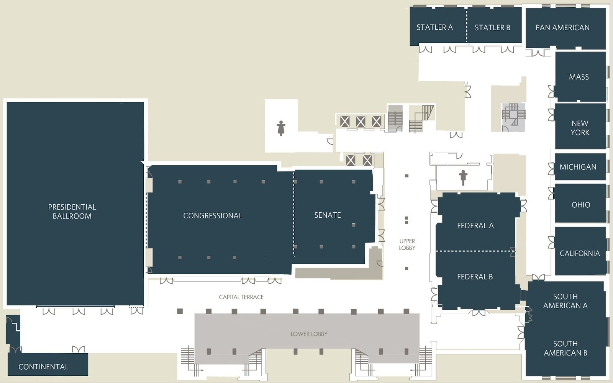

IEEE ICDM 2025 Program Schedule
Washington, DC, USA
Conference time zone: US Eastern Standard Time
Meeting Rooms
| Floor | Room |
|---|---|
| 2nd floor | Presidential Ballroom |
| 2nd floor | Congressional |
| 2nd floor | Senate Room |
| 2nd floor | Continental Room |
| 2nd floor | Federal A |
| 2nd floor | Federal B |
| 2nd floor | South American A |
| 2nd floor | South American B |
| 2nd floor | California |
| 2nd floor | Ohio |
| 2nd floor | Michigan Executive Board Room |
| 2nd floor | New York |
| 2nd floor | Massachusetts |
| 2nd floor | Pan American |
| 2nd floor | Statler A |
| 2nd floor | Statler B |
Sponsored by
IEEE ICDM 2025 Program Schedule
IEEE ICDM 2025 Program Schedule
Washington DC, USA
November 12 Wednesday - November 15 Saturday, 2025
Keynote Lecture: 60 minutes (50-min talk + 10-min Q/A)
Main conf. regular: 20 mins (17-minute talk + 3-min Q/A)
Main conf. short: 15 minutes (12-min talk + 3-min Q/A)
Registration: Tuesday, Nov. 11, 15:00-18:00 PM
(Location: 2nd Floor Coatcheck)
Day 1: Wednesday, Nov. 12, 2025
| Time | Location | Workshop Chairs (Li Zhang, Zhe Jiang, Ranga Raju Vatsavai) | Chair(s) |
|---|---|---|---|
| 7:30–17:00 | 2nd Floor Coat Check |
Registration | Yifeng Gao, Yanhua Li |
| 7:30-9:30 | Capital Terrace | Breakfast | |
| 10:00–10:30 | Congressional, Capital Terrace | Coffee Break | |
| 12:30–13:30 | Lunch(Presidential Ballroom) | ||
| 16:00–16:30 | Congressional, Capital Terrace | Coffee Break | |
| 8:30–12:30 | Presidential |
Trust4ML:Trustworthy Machine Learning for Fair, Private, Robust, and Explainable Decision-Making Workshop https://trustworthy-ai.com.au/ |
Huaming Chen |
| 8:30–12:30 | Congressional |
AI4TS:Workshop of Artificial Intelligence for Time Series Analysis (AI4TS): Theory, Algorithms, and Applications https://ai4ts.github.io/icdm2025 |
Yifeng Gao |
| 8:30–12:30 | Senate |
Mental Health Disorder Detection on Social Media (MHSM 2025) Workshop https://cmhsm.my.canva.site/mhsm-workshop/ |
Jun Li |
| 8:30–12:30 | Federal A |
1st Workshop on Computational Gastronomy (CoGamy):Data Science for Food and Cooking https://sites.google.com/uniroma1.it/cogamy2025 |
Andrea Vitaletti |
| 8:30–12:30 | Federal B |
Workshop on Synergy of AI and Multimodal Biomedical Data Mining (SAMBio) https://icdm25-saimbio.github.io/ |
Haoteng Tang, Lu Zhang |
| 8:30–12:30 | South American A |
Workshop on Multimodal Search and Recommendations (MMSR) Workshop https://icdm-mmsr.github.io/ |
Aditya Chichani |
| 8:30–12:30 | South American B |
2025 Symposium for Undergraduate Research in Data Science, Systems, and Security (REU Symposium 2025) https://bigdatareu.umbc.edu/reu-symposium/reu-symposium-2025/ |
Jianwu Wang, Xuechen Zhang, Xiaokun Yang, Xinghui Zhao, Matthias K. Gobbert |
| 8:30–12:30 | California |
Workshop on Grounding Documents with Reasoning, Agents, Retrieval, and Attribution (RARA) Workshop https://raraworkshop.github.io/ |
Manan Suri |
| 8:30–12:30 | Ohio |
Data Mining for Service (DMS 2025) Workshop https://www2.kansai-u.ac.jp/dslab/workshop/2025/DMS2025/ |
Katsutoshi Yada |
| 8:30–12:30 | New York |
The First International Workshop on Resilient Artificial Intelligence for Manufacturing Workshop https://xuanwang91.github.io/2025-ICDM-RAiM/ |
Ran Jin |
| 8:30–12:30 | Massachusetts |
11th Workshop on Data Mining in Earth System Science (DMESS 2025) https://www.climatemodeling.org/workshops/dmess2025/ |
Forrest M. Hoffman |
| 8:30–12:30 | Pan American |
Interactive and Scalable Information Retrieval Methods for E-Commerce (ISIR-eCom) https://isir-ecom.github.io/ |
Linsey Pang |
| 8:30–12:30 | Statler A |
International Workshop on Foundation Models for Biology and Bioinnovation https://data-science-group.github.io//BioFM/2025/ |
Amin Beheshti |
| 8:30–12:30 | Statler B |
AI for Computational Social Science https://ai4css.github.io/ |
Zhao Wang |
| 16:00–16:30 | Congressional, Capital Terrace | Coffee Break | |
| 13:30–17:30 | Presidential |
Trust4ML: Trustworthy Machine Learning for Fair, Private, Robust, and Explainable Decision-Making Workshop https://trustworthy-ai.com.au/ |
Huaming Chen |
| 13:30–17:30 | Congressional |
AI4TS: Workshop of Artificial Intelligence for Time Series Analysis (AI4TS): Theory, Algorithms, and Applications https://ai4ts.github.io/icdm2025 |
Yifeng Gao |
| 13:30–17:30 | Senate |
The 8th IEEE Workshop on Benchmarking, Performance Tuning and Optimization for Big Data Analytics and Big Models (BPOD) https://bdal.umbc.edu/bpod/bpod-2025/ |
Zhiyuan Chen |
| 13:30–17:30 | Federal A |
Open World Anomaly Detection in Dynamic and Evolving Environments (OWAD) https://sites.google.com/view/icdm2025-open-world-workshop |
Roberto Corizzo |
| 13:30–17:30 | Federal B |
The 9th Workshop on Graph Techniques for Adversarial Activity Analytics (GTA3) https://gta3.hrl.com/ |
Jiejun Xu |
| 13:30–17:30 | South American A |
5th IEEE International Workshop on Multimodal AI (MMAI 2025) https://icdmw25mmai.github.io/ |
Kaiqun Fu |
| 13:30–17:30 | South American B |
2025 Symposium for Undergraduate Research in Data Science, Systems, and Security (REU Symposium 2025) https://bigdatareu.umbc.edu/reu-symposium/reu-symposium-2025/ |
Jianwu Wang, Xuechen Zhang, Xiaokun Yang, Xinghui Zhao, Matthias K. Gobbert |
| 13:30–17:30 | California |
Data Mining for Ambient Intelligence and Secure Communications (DM-AISC) https://thinkspace.csu.edu.au/dm-aisc2025/ |
Quazi Mamun |
| 13:30–17:30 | Ohio |
Visionary Innovation in Standards and Technology of GenAI (VISTA) https://vista-genai.github.io/ |
Denghui Zhang |
| 13:30–17:30 | New York |
International Workshop on Adaptable, Reliable, and Responsible Learning (ARRL) https://arrl-icdm.github.io/arrl2025/ |
Yi He |
| 13:30–17:30 | Massachusetts |
The first Workshop on Large Language Models for Advanced Clustering Techniques (LLM4Cluster) https://llm4cluster.github.io/LLM4Cluster2025/ |
Ye Wei |
| 13:30–17:30 | Pan American |
The 2nd Workshop on Information Seeking with Big Models (BigIS) https://bigis24.github.io/bigis2025/ |
Zheng Wang |
| 13:30–17:30 | Statler A |
IEEE ICDM 20th International Workshop on Spatial and Spatiotemporal Data Mining (SSTDM-2025) https://stac-lab.github.io/sstdm25/ |
Krishna Karthik Gadiraju |
| 13:30–17:30 | Statler B |
International Workshop on AI for Nudging and Personalization (WAIN) https://lirio-brell.github.io/wain25/ |
Christopher Symons |
Day 2: Thursday, November 13, 2025
| 8:00–17:00 | Registration(2nd FloorCoat Check) | ||
| 7:30-9:30 | Breakfast
(Capital Terrace) |
||
| 8:00–8:30 | Poster Setup (Lei Zhang, Zhiqian Chen) |
||
| 8:20–9:00 | Presidential Ballroom | Opening Ceremony Conference Chairs: Chang-Tien Lu (Virginia Tech), Dimitrios Gunopulos (University of Athens) PC Chairs: Wei Ding (U. of Massachusetts, Boston), Jilles Vreeken (CISPA Helmholtz Center) Workflow Chair: Fusheng Wang (Stony Brook U) |
|
| 9:00–10:00 | Presidential Ballroom | Keynote Speech I Dr. John Quackenbush, Harvard University, USA Why Networks Matter: Embracing Biological Complexity Location: Presidential Ballroom |
|
| 10:00–10:30 | Capital Terrace, Congressional |
Coffee Break | |
| 10:00–10:30 | Congressional | Poster Display (Session Chairs: Lei Zhang, Zhiqian Chen) |
|
| Time | Location | Event | Chair(s) |
|---|---|---|---|
| 10:30–12:00 | Presidential Ballroom | Panel A: The Future of Probabilistic Modeling in Data Mining and AI | Farhad Pourkamali |
| 10:30–12:30 | South American B | Main Conference Track S11: Graphs I | Lei Zhang |
| 10:30–12:30 | Federal A | Main Conference Track S12: LLMs I | Taoran Ji |
| 10:30–12:30 | Federal B | Main Conference Track S13: Applications I | Ping Wang |
| 10:30–12:30 | South American A | Sentiment Elicitation from Natural Text for Information Retrieval and Extraction (SENTIRE) https://sentic.net/sentire/ |
Donghao Huang |
| 10:30–12:30 | California | Tutorial 1: Data Security and Privacy in Machine Unlearning: Recent Advances, Challenges, and Future Perspectives | Aobo Chen, Wei Qian, Zheyuan Liu, Shagufta Mehnaz, Tianhao Wang, Mengdi Huai |
| 10:30–12:30 | Ohio | Tutorial 2: AI-Driven Multimodal Frameworks for Healthcare Decision-Making | Jiaming Cui, Xuan Wang, Zhe Zeng, Hongru Du |
| 10:30–12:30 | New York | AI-ready data for science discovery (ADSD) https://cnicds.github.io/ICDM2025/ |
Pengfei Wang |
| 10:30–12:30 | Massachusetts | SABID 2025: Workshop on Solar & Stellar Astronomy Big Data https://sites.google.com/view/sabid2025/home |
Bo Shen |
| 10:30–12:30 | Pan American | Workshop on Data Mining for Reliable Decision-Making (RDM) https://sites.google.com/view/rdm-2025 |
Haotian Wang |
| 10:30–12:30 | Statler A | 1st Workshop on the Use of Large Language Models for Cyber Security (LLM4Sec) https://llm4sec-workshop.github.io/ |
Antonino Rullo |
| 10:30–12:30 | Statler B | User Modeling and Recommendation (UMRec) https://umrec.github.io/ |
Yanghao Xiao |
| 12:30–13:30 | Lunch(Presidential Ballroom) | ||
| 14:00–16:00 | South American B | Main Conference Track S14: Graph Neural Networks | Lecheng Zheng |
| 14:00–16:00 | Federal A | Main Conference Track S15: Time Series I | Yifeng Gao |
| 14:00–16:00 | Federal B | Main Conference Track S16: Interpretability | Jianwu Wang |
| 14:00–16:00 | South American A | Sentiment Elicitation from Natural Text for Information Retrieval and Extraction (SENTIRE) https://sentic.net/sentire/ |
Donghao Huang |
| 14:00–16:00 | Senate | Women in Science | Senjuti Basu Roy, Linsey Pang, Ling Chen |
| 14:00–15:50 | California | Tutorial 3: Geospatial Foundation Models: Algorithms and Applications | Ranga Raju Vatsavai |
| 14:00–15:50 | Ohio | Tutorial 4: Federated Stochastic Compositional and Bilevel Optimization | Hongchang Gao, Xinwen Zhang |
| 14:00–16:00 | New York | AI-ready data for science discovery (ADSD) https://cnicds.github.io/ICDM2025/ |
Pengfei Wang |
| 14:00–16:00 | Massachusetts | SABID 2025: Workshop on Solar & Stellar Astronomy Big Data https://sites.google.com/view/sabid2025/home |
Bo Shen |
| 14:00–16:00 | Pan American | Workshop on Data Mining for Reliable Decision-Making (RDM) https://sites.google.com/view/rdm-2025 |
Haotian Wang |
| 14:00–16:00 | Statler A | 1st Workshop on the Use of Large Language Models for Cyber Security (LLM4Sec) https://llm4sec-workshop.github.io/ |
Antonino Rullo |
| 14:00–16:00 | Statler B | User Modeling and Recommendation (UMRec) https://umrec.github.io/ |
Yanghao Xiao |
| 16:00–16:30 | Capital Terrace, Congressional |
Coffee Break | |
| 16:00–16:30 | Poster Display | ||
| 16:30–18:00 | Federal A | Main Conference Track S17: Classification | Raju Vatsavai |
| 16:30–18:00 | Federal B | Main Conference Track S18: Explainability | Li Zhang |
| 16:30–18:00 | Senate | Women in Science | Senjuti Basu Roy, Linsey Pang, Ling Chen |
| 16:10–18:00 | California | Tutorial 5: Uncertainty Quantification and Mitigation in Large Language Models | Longchao Da, Xiaoou Liu, Hua Wei |
| 16:10–18:00 | Ohio | Tutorial 6: Behavior-Aware Data Valuation for LLMs at Scale | Zhaozhuo Xu, Huawei Lin, Weijie Zhao, Denghui Zhang |
| 16:30–18:00 | New York | AI-ready data for science discovery (ADSD) https://cnicds.github.io/ICDM2025/ |
Pengfei Wang |
| 16:30–18:00 | Massachusetts | SABID 2025: Workshop on Solar & Stellar Astronomy Big Data https://sites.google.com/view/sabid2025/home |
Bo Shen |
| 16:30–18:00 | Pan American | Workshop on Data Mining for Reliable Decision-Making (RDM) https://sites.google.com/view/rdm-2025 |
Haotian Wang |
| 16:30–18:00 | Statler A | 1st Workshop on the Use of Large Language Models for Cyber Security (LLM4Sec) https://llm4sec-workshop.github.io/ |
Antonino Rullo |
| 17:00–18:00 | Statler B | User Modeling and Recommendation (UMRec) https://umrec.github.io/ |
Yanghao Xiao |
| 18:05–18:30 | Registration Desk | OC Group Photo (Invitation Only) | |
| 19:00–21:00 | OC Business Meeting (Invitation Only) | ||
Day 3: Friday, November 14, 2025
| 8:30–17:00 | Registration (2nd Floor Coatcheck) | ||
| 7:30-9:30 | Breakfast
(Capital Terrace) |
||
| 8:30–9:00 | Poster Setup (Session Chairs: Lei Zhang, Zhiqian Chen) |
||
| 8:30–9:00 | ICDM Award Announcement Dr. Xindong Wu, ICDM Steering Committee Chair Location: Presidential Ballroom (Video Streaming) |
||
| 9:00–10:00 | Keynote Speech II Dr. Aidong Zhang, University of Virginia, USA Optimizing External and Internal Knowledge of Large Foundation Models for Scientific Discovery Location: Presidential Ballroom | ||
| 10:00–10:30 | Award Research Presentations Research Contributions Award, Dr. Zhi-Hua Zhou (Video Streaming) 10-year Impact Award,Dr. Ruining He Tao Li Award, Dr. Jundong Li (Session Chairs: Chang-Tien Lu, Jilles Vreeken) Location: Presidential Ballroom |
||
| 10:00–11:00 | Capital Terrace, Congressional |
Coffee Break | |
| 10:00–11:00 | Congressional | Poster Display (Session Chairs: Lei Zhang, Zhiqian Chen) |
|
| Time | Location | Session/Workshop | Session Chair(s) |
|---|---|---|---|
| 11:00–12:30 | Presidential Ballroom |
Panel B: AI-Driven Data Mining - Reshaping the Intelligent Future | Duoduo (Lindi) Liao |
| 11:00–12:30 | Senate | Main Conference Track S21: Graphs II | Yi He |
| 11:00–12:30 | Federal A | Main Conference Track S22: LLMs II | Kunpeng Liu |
| 11:00–12:30 | Federal B | Main Conference Track S23: Applications II | Xuechen Zhang |
| 10:30–12:30 | South American B | BlueSky Track | Yujun Yan, Farnoush Banaei-Kashani, Xiaowei Jia |
| 10:30–12:30 | California | Tutorial 7: Time Series Analysis Unraveled: Motifs, Forecasting, and Explainability | Jessica Lin, Panagiotis Papapetrou, Li Zhang |
| 10:30–12:30 | Ohio | Tutorial 10: Responsible GenFMs: From Foundational Principles to Real-World Impact | Yue Huang, Canyu Chen, Lu Cheng, Bhavya Kailkhura, Manling Li, Xiangliang Zhang |
| 10:30–12:30 | New York | The 12th workshop for high dimensional data mining (HDM) https://sites.google.com/view/hdm25 |
Aman Shukla |
| 10:30–12:30 | Massachusetts | Graph-Augmented LLMs: Bridging Language and Structured Knowledge (GaLM) https://iitbhu.ac.in/cf/jcsic/activities/workshops/GaLM |
Steve Huntsman |
| 10:30–12:30 | Pan American | Neverending Machine Learning (NML) https://sites.google.com/view/nml-icdm2025/home |
Michal Wozniak |
| 12:30–13:30 | Lunch (Presidential Ballroom) | ||
| 13:30–15:30 | South American B | PhD Forum | Olga Andreeva, Vagelis Papalexakis, Lijing Wang |
| 13:30–15:20 | California | Tutorial 9: Fairness in Language Models: A Tutorial | Zichong Wang, Avash Palikhe, Zhipeng Yin, Wenbin Zhang |
| 13:30–15:20 | Ohio | Tutorial 8: AI for Precision Medicine: Integrative Analysis of Histopathology Images and Spatial Omics | Ninghui Hao, Boshen Yan, Dong Li, Chen Zhao, Guihong Wan |
| 14:00–15:30 | Senate | Main Conference Track S24: Deep Learning I | Lindi Liao |
| 14:00–15:30 | Federal A | Main Conference Track S25: Time Series II | Dongjin Song |
| 14:00–15:30 | Federal B | Main Conference Track S26: Clustering | Meikang Qiu |
| 14:00–15:30 | South American A | BlueSky PC meeting | Yujun Yan, Farnoush Banaei-Kashani, Xiaowei Jia |
| 14:00–15:30 | New York | Workshop on AI for Financial Crime Fight (AI4FCF) https://sites.google.com/view/ai4fcf/home-page |
Nikhil Jha |
| 14:00–15:30 | Massachusetts | The 5th Machine Learning for Cybersecurity (MLC), 2025 https://ml4cyber.github.io/25/ |
Atousa Arzanipour, Rouzbeh Behnia |
| 14:00–15:30 | Pan American | The 1st International Workshop on Data Mining and AI for Law (DMAIL), 2025 https://dmail-workshop.github.io/DMAIL2025/ |
Jiangping Chen |
| 14:00–15:30 | Statler A | 3rd International Workshop on Data Mining in Finance (DMF2025) https://sites.google.com/view/dmf-2025 |
Shuoling Liu |
| 14:00–15:30 | Statler B | Data Mining in Biomedical Informatics and Healthcare (DMBIH’25) https://www.oakland.edu/secs/dmbih-workshop-2025/ |
Mohammad-Reza Siadat |
| 15:30–16:00 | Capital Terrace, Congressional |
Coffee Break | |
| 15:30–16:00 | Capital Terrace, Congressional |
Poster Display | |
| 15:40–17:30 | California | Tutorial 11: Explaining the “Unexplainable” Large Language Models | Zhen Tan, Song Wang, Jing Ma, Jundong Li, Huan Liu |
| 15:40–17:30 | Ohio | Tutorial 12: Multiple Clustering: From Classical Foundations to Interactive, User-Guided Methods | Jiawei Yao, Juhua Hu, Jian Pei |
| 16:00–17:30 | Presidential Ballroom |
Plenary Panel: TBA | Jilles Vreeken & Wei Ding |
| 16:00–17:30 | South American B | PhD Forum | Vagelis Papalexakis, Lijing Wang, Olga Andreeva |
| 16:00–17:00 | New York | Workshop on AI for Financial Crime Fight (AI4FCF) https://sites.google.com/view/ai4fcf/home-page |
Nikhil Jha |
| 16:00–17:30 | Massachusetts | The 5th Machine Learning for Cybersecurity (MLC), 2025 https://ml4cyber.github.io/25/ |
Atousa Arzanipour, Rouzbeh Behnia |
| 16:00–17:30 | Pan American | The 1st International Workshop on Data Mining and AI for Law (DMAIL), 2025 https://dmail-workshop.github.io/DMAIL2025/ |
Jiangping Chen |
| 16:00–17:00 | Statler A | 3rd International Workshop on Data Mining in Finance (DMF2025) https://sites.google.com/view/dmf-2025 |
Shuoling Liu |
| 16:00–17:00 | Statler B | Data Mining in Biomedical Informatics and Healthcare (DMBIH’25) https://www.oakland.edu/secs/dmbih-workshop-2025/ |
Mohammad-Reza Siadat |
| 17:30–18:30 | Walk to the International Spy Museum 700 L'Enfant Plaza SW, Washington, DC 20024 |
||
| 18:30–22:00 (Doors open at 18:00) |
International Spy Museum | Banquet Award Ceremony Social Program (Guests may enter starting at 18:00 PM) |
|
Day 4: Saturday, November 15, 2025
| 8:30–13:30 | Registration (2nd Floor Coat Check) | |||
| 8:00-9:30 | Breakfast
(Capital Terrace) |
|||
| 8:30–9:00 | Demo Poster Setup (Demo Chairs: Kaiqun Fu, Tim Weninger) |
|||
| 9:00–10:00 | Regency Ballroom | Keynote Speech III Dr. Jure Leskovec, Stanford University, USA Relational Foundation Models: A New Frontier for Predictive AI in Structured Data Location: Regency Ballroom |
||
| 10:00–10:30 | Capital Terrace, Congressional | Coffee Break | ||
| 10:00–12:00 | Congressional | Demo Poster Display (Demo Chairs: Kaiqun Fu, Tim Weninger) |
||
| Time | Location | Event | Chair(s) | |
|---|---|---|---|---|
| 10:30–12:30 | South American A + B | UG HS Symposium (Keynote, Fireside Chat, Parent Panel) | Xuan Wang, Yanjie Fu | |
| 10:30–12:30 | Federal A | Main Conference Track S31: Graphs & Learning | Liqing Zhang | |
| 10:30–12:30 | Federal B | Main Conference Track S32: Applications III | Raju Vatsavai | |
| 10:30–12:30 | California | Tutorial 13: Computational Pathology Foundation Models: Datasets, Adaptation Strategies, and Evaluations | Dong Li, Ninghui Hao, Xintao Wu, Guihong Wan, Chen Zhao | |
| 12:30–13:30 | Presidential Ballroom | Lunch | ||
| 12:30–14:00 | Congressional | UG HS Symposium (Poster Session) | Xuan Wang, Yanjie Fu, Lei Zhang, Zhiqian Chen | |
| 14:00–15:30 | Federal A | UG HS Symposium UH1 (Oral Session: S01287, S01286, S01285, S01242, S01241, S01282, S01281) | Sanjay Madria | |
| 14:00–15:30 | Federal B | UG HS Symposium UH2 (Oral Session: S01280, S01279, S01278, S01277, S01276, S01275, S01274) | Chen Chen | |
| 14:00–15:30 | Senate | UG HS Symposium UH3 (Oral Session: S01273, S01271, S01269, S01267, S01264, S01263) | Fang Jin | |
| 13:30–15:30 | California | UG HS Symposium UH4 (Oral Session: S01262, S01261, S01260, S01258, S01257, S01256) | Haibing Lu | |
| 14:00–15:30 | New York | UG HS Symposium UH5 (Oral Session: S01255, S01254, S01253, S01252, S01251, S01250) | Mohammad Ali Javidian | |
| 14:00–15:30 | Massachusetts | UG HS Symposium UH6 (Oral Session: S01249, S01248, S01246, S01245, S01244, S01243, DM556) | Long Nguyen | |
| 14:00–15:30 | Pan American | Main Conference Track S33: Deep Learning II | Yong Zhuang | |
| 14:00–15:30 | Statler A | 1st International Workshop on Realistic Robustness and Generalization in Data Mining (RRoG-DM) https://sites.google.com/view/kaizhu-huang-homepage/icdm-rrog-workshop-2025 |
Kaizhu Huang | |
| 14:00–15:30 | Statler B | Main Conference Track S34: Anomaly Detection | Jundong Li | |
| 15:30–16:00 | Capital Terrace, Congressional | Coffee Break | ||
| 15:30–16:00 | Capital Terrace, Congressional | Poster Display | ||
| 16:00–17:30 | Federal A | UG HS Symposium UH7 (Oral Session: S01284, S01283, S01240, S01239, S01238, S01237, S01236) | Yi He | |
| 16:00–17:30 | Federal B | UG HS Symposium UH8 (Oral Session: S01235, S01234, S01233, S01232, S01231, S01230, S01229) | Kunpeng Liu | |
| 16:00–17:30 | Senate | UG HS Symposium UH9 (Oral Session: DM314, S01228, S01227, S01226, S01224, S01223, S01222) | Kanthi K Sarpatwar | |
| 16:00–17:30 | California | UG HS Symposium UH10 (Oral Session: S01221, S01220, S01219, S01218, S01217, S01216) | Zhou Yang | |
| 16:00–17:30 | New York | UG HS Symposium UH11 (Oral Session: S01215, S01214, S01213, S01212, S01211, S01210) | Senjuti Basu Roy | |
| 16:00–17:30 | Massachusetts | UG HS Symposium UH12 (Oral Session: S01208, S01207, S01206, S01204, S01203, S01201) | Meikang Qiu | |
| 16:00–17:30 | Pan American | Main Conference Track S35: Foundations | Kaixun Hua | |
| 16:00–17:30 | Statler A | 1st International Workshop on Realistic Robustness and Generalization in Data Mining (RRoG-DM) https://sites.google.com/view/kaizhu-huang-homepage/icdm-rrog-workshop-2025 |
Kaizhu Huang | |
| 16:00–17:30 | Statler B | Main Conference Track S36: Trustworthiness | Wenbin Zhang | |
| 17:30–18:30 | Presidential Ballroom | Closing Ceremony Conference Chairs: Chang-Tien Lu (Virginia Tech), Dimitrios Gunopulos (University of Athens) PC Chairs: Wei Ding (U. of Massachusetts, Boston), Jilles Vreeken (CISPA Helmholtz Center) Workflow Chair: Fusheng Wang (Stony Brook U) |
||
IEEE ICDM 2025 Recorded Virtual Presentations
https://www.cs.stonybrook.edu/~icdm2025/videopresentations.htmlConference Hotel Floor Map (Second Floor)

Breakfast, Lunch, Coffee and Banquet (Provided)
Breakfast: Location: Capital TerraceNov 12 (Wed)–14 (Fri): 7:30–9:30am; Nov 15 (Sat): 8:00–9:30am
Coffee Break: Location: Congressional and Capital Terrace
- Wed, Nov 12 — 10:00–10:30 • 16:00–16:30
- Thu, Nov 13 — 10:00–10:30 • 16:00–16:30
- Fri, Nov 14 — 10:00–10:30 • 15:30–16:00
- Sat, Nov 15 — 10:00–10:30 • 15:30–16:00
Lunch break: 12:30 – 13:30
Days 1-4: Location: Presidential Ballroom
Banquet: 18:30–22:00, Day 3, Nov 14
Location: International Spy Museum. Door Open: 18:00
Main Conference Paper Sessions
| ID | Title | Authors |
|---|---|---|
| S11: Graphs I | ||
| DM247 | Early Detection and Attribution of Structural Changes in Dynamic Networks | Izhar Ali (Rowan University), Shen-Shyang Ho (Rowan University) |
| DM418 | HyperSearch: Prediction of New Hyperedges through Unconstrained yet Efficient Search | Hyunjin Choo (KAIST), Fanchen Bu (KAIST), Hyunjin Hwang (KAIST), Young-Gyu Yoon (KAIST), Kijung Shin (KAIST) |
| DM624 | Modularity-Fair Deep Community Detection | Christos Gkartzios (University of Ioannina), Evaggelia Pitoura (University of Ioannina), Panayiotis Tsaparas (University of Ioannina) |
| DM360 | LifelongSkill: Toward Modality-varying Lifelong Learning with Latent Knowledge Hypergraph | Jiayi Chen (University of Virginia), Kishlay Jha (University of Iowa), Aidong Zhang (University of Virginia) |
| DM943 | HyperModal: Dynamic Hypergraph Contrastive Learning for Multi-Modal Representation | Lulwah AlKulaib (Kuwait University) |
| S13: Applications I | ||
| DM255 | Equilibrium-Based NFT Marketplace Recommendation for NFTs with Breeding | Chin-Yuan Yeh (National Taiwan University), Hsi-Wen Chen (National Taiwan University), De-Nian Yang (Academia Sinica), Wang-Chien Lee (The Pennsylvania State University), Philip Yu (University of Illinois), Ming-Syan Chen (National Taiwan University) |
| DM577 | Beyond the Pre-Service Horizon: Infusing In-Service Behavior for Improved Financial Risk Forecasting | Senhao Liu (Renmin University of China), Zhiyu Guo (Tencent Weixin Group), Zhiyuan Ji (Renmin University of China), Yueguo Chen (Renmin University of China), Yateng Tang (Tencent Weixin Group), Yunhai Wang (Renmin University of China), Xuehao Zheng (Tencent Weixin Group), Xiang Ao (University of Chinese Academy of Sciences) |
| DM588 | On Predicting Post-Click Conversion Rate via Counterfactual Inference | Junhyung Ahn (Viva Republica Inc.), Sanghack Lee (Seoul National University) |
| DM695 | Extracting Actionable Insights from Building Energy Data using Vision LLMs on Wavelet and 2D Recurrence Representations | Amine Bechar (University of Sharjah), Adel Oulefki (University of Sharjah), Abbes Amira (University of Sharjah), Fatih Kurugollu (University of Sharjah), Yassine Himeur (University of Dubai) |
| DM731 | Boosting Clinical Outcome Prediction with Context-Aware Feature Imputation and Disentanglement | Lei Gong (University of Virginia), Aidong Zhang (University of Virginia), Kishlay Jha (University of Iowa) |
| S12: LLMs I | ||
| DM238 | Detect, Investigate, Judge and Determine: A Knowledge-guided Framework for Few-shot Fake News Detection | Ye Liu (University of Science and Technology of China), Jiajun Zhu (University of Science and Technology of China), Xukai Liu (University of Science and Technology of China), Haoyu Tang (University of Science and Technology of China), Yanhai Zhang (University of Science and Technology of China), Kai Zhang (University of Science and Technology of China), Xiaofang Zhou (The Hong Kong University of Science and Technology), Enhong Chen (University of Science and Technology of China) |
| DM245 | Learn while Unlearn: An Iterative Unlearning Framework for Generative Language Models | Haoyu Tang (University of Science and Technology of China), Ye Liu (University of Science and Technology of China), Xi Zhao (The Hong Kong University of Science and Technology), Xukai Liu (University of Science and Technology of China), Yanhai Zhang (University of Science and Technology of China), Kai Zhang (University of Science and Technology of China), Xiaofang Zhou (The Hong Kong University of Science and Technology), Enhong Chen (University of Science and Technology of China) |
| DM328 | Efficient Sequential Recommendation for Long Term User Interest Via Personalization | Qiang Zhang (Meta), Hanchao Yu (Meta), Ivan Ji (Meta), Chen Yuan (Meta), Yi Zhang (Meta), Chihuang Liu (Meta), Xiaolong Wang (Meta), Christopher E. Lambert (Meta), Ren Chen (Meta), Chen Kovacs (Meta), Xinzhu Bei (Meta), Renqin Cai (Meta), Rui Li (Meta), Lizhu Zhang (Meta), Xiangjun Ma (Meta), Qunshu Zhang (Meta), Benyu Zhang (Meta) |
| DM657 | InSQuaD: In-Context Learning for Efficient Retrieval via Submodular Mutual Information to Enforce Quality and Diversity | Souradeep Nanda (University of Texas at Dallas), Anay Majee (University of Texas at Dallas), Rishabh Iyer (University of Texas at Dallas) |
| DM273 | Unveiling the Merits and Defects of LLMs in Automatic Review Generation for Scientific Papers | Ruochi Li (North Carolina State University), Haoxuan Zhang (University of North Texas), Edward Gehringer (North Carolina State University), Ting Xiao (University of North Texas), Junhua Ding (University of North Texas), Haihua Chen (University of North Texas) |
| S14: Graph Neural Networks | ||
| DM424 | DelayNetODE: Delay-Aware System Modelling Using Graph Attention and Continuous-Time Neural Dynamics | Saumya Karunadhika (The University of Melbourne), Ling Luo (The University of Melbourne), Bastian Oetomo (The University of Melbourne), Michele Discepola (The University of Melbourne), Sandra Kentish (The University of Melbourne), Sally Gras (The University of Melbourne), Uwe Aickelin (The University of Melbourne) |
| DM526 | Test-Time Graph Rebirth For GNN Generalization Under Distribution Shifts | Xin Zheng (Griffith University), Bo Li (Griffith University), Yu Zheng (Latrobe University), Qin Zhang (Shenzhen University), Haishuai Wang (Zhejiang University), The Hong Kong University of Science and Technology (Guangzhou), Alan Wee-Chung Liew (Griffith University), Shirui Pan (Griffith University) |
| DM527 | Test-time GNN Model Evaluation on Dynamic Graphs | Bo Li (Griffith University), Xin Zheng (Griffith University), Ming Jin (Griffith University), Can Wang (Griffith University), Shirui Pan (Griffith University) |
| DM478 | BLB-HGNN: Bag of Little Bootstraps for Training Heterogeneous GNNs | Aditya Vadlamani (The Ohio State University), Sama Salarian (The Ohio State University), Saket Gurukar (The Ohio State University), Srinivasan Parthasarathy (The Ohio State University) |
| DM895 | Self-Supervised Distribution Correction to Boost Information Gain in Offline Reinforcement Learning | Jingyi Yuan (Arizona State University), Hamad Alduaij (Arizona State University), Yang Weng (Arizona State University) |
| S16: Interpretability | ||
| DM509 | SPOT: Spatio-temporal Pattern Mining and Optimization for Load Consolidation in Freight Transportation Networks | Sikai Cheng (AI4OPT, Georgia Institute of Technology), Amira Hijazi (AI4OPT, Georgia Institute of Technology), Jeren Konak (AI4OPT, Georgia Institute of Technology), Alan Erera (AI4OPT, Georgia Institute of Technology), Pascal Van Hentenryck (AI4OPT, Georgia Institute of Technology) |
| DM512 | Resilient Pattern Mining | Pengxin Bian (King's College London), Panagiotis Charalampopoulos (King's College London), Lorraine Ayad (Brunel University), Manal Mohamed (King's College London), Solon Pissis (CWI), Grigorios Loukides (King's College London) |
| DM706 | Interpretable and Interactive Deep Survival Analysis with Time-dependent EXtreme Gradient Integration | Xinyu Qin (University of Houston), Ruiheng Yu (University of Houston), Armin Khayati (University of Houston), Zixiao Qiu (University of Toronto), Gengyi Zou (MD Anderson Cancer Center), Yan Li (University of Toronto), Lu Wang (University of Houston) |
| DM467 | Speciated Unsupervised Skill Discovery | Ryan Wickman (Microsoft), Xiaofei Zhang (The University of Memphis) |
| DM639 | TABFAIRGDT: A Fast Fair Tabular Data Generator using Autoregressive Decision Trees | Emmanouil Panagiotou (Freie Universität Berlin), Benoît Ronval (UCLouvain, ICTEAM), Arjun Roy (University of the Bundeswehr Munich), LMU Munich. 2) Munich Center for Machine Learning (MCML), LMU Munich. 2) Munich Center for Machine Learning (MCML), DTAI.) and Eirini Ntoutsi (Research Institute CODE, Bundeswehr Universität Munich) |
| S15: Time Series I | ||
| DM234 | MARCEL: Multifaceted Spatial-Temporal Contrastive Learning for Generic Spatial-Temporal Representations | Yuhang Liu (The State University of New York at Binghamton), Yingxue Zhang (Binghamton University), Xin Zhang (San Diego State University), Yu Yang (Lehigh University), Yanhua Li (Worcester Polytechnic Institute), Jun Luo (Logistics and Supply Chain MultiTech R&D Centre) |
| DM241 | Improving Generalization Capabilities of Models Trained on Time Series Data Using Novel Downsampling Methods | Ofir Landau (Ben-Gurion University), Nir Nissim (Nir Nissim) |
| DM650 | MuRAL-CPD: Active Learning for Multiresolution Change Point Detection | Stefano Bertolasi (Università di Trento), Diego Carrera (STMicroelectronics), Diego Stucchi (STMicroelectronics), Pasqualina Fragneto (STMicroelectronics), Luigi Amedeo Bianchi (Università di Trento) |
| DM587 | STRIDE: Spectral-Temporal Representation and Instance-weighted Domain Expansion | Ngoc Chi Nam Doan (Singapore Institute of Manufacturing Technology), Van Tung Tran (Singapore Institute of Manufacturing Technology), Karkulali Pugalenthi (Singapore Institute of Manufacturing Technology) |
| DM269 | On the Necessity of Multi-Domain Explanation: An Uncertainty Principle Approach for Deep Time Series Models | shahbaz Rezaei (University of California, Davis), Avishai Halev (University of California, Davis, CA), Xin Liu (University of California, Davis) |
| S17: Classification | ||
| DM561 | Retrieval-Augmented Feature Generation for Domain-Specific Classification | Xinhao Zhang (Portland State University), Jinghan Zhang (Clemson University), Fengran Mo (University of Montreal), Dakshak Keerthi Chandra (Analog Devices), Yuzhong Chen (Independent Researcher), Fei Xie (Portland State University), Kunpeng Liu (Clemson University) |
| DM684 | Efficient Large-Scale Learning of Minimax Risk Classifiers | Kartheek Bondugula (Basque Center for Applied Mathematics), Santiago Mazuelas (Basque Center for Applied Mathematics), Aritz Perez (Basque Center for Applied Mathematics) |
| DM455 | Towards Trustworthy Vital Sign Forecasting: Leveraging Uncertainty for Prediction Intervals | Li Rong Wang (Nanyang Technological University, College of Computing and Data Science), Thomas C. Henderson (University of Utah, School of Computing), Yew Soon Ong (Nanyang Technological University, College of Computing and Data Science), Yih Yng Ng (Saw Swee Hock School of Public Health, National University of Singapore), Xiuyi Fan (Nanyang Technological University, Lee Kong Chian School of Medicine) |
| DM958 | Revisiting One-Versus-One and One-Versus-Rest: Insights into Imbalanced Multi-class Classification | Kuan-Ting Chen (Mohamed bin Zayed University of Artificial Intelligence), Chih-Jen Lin (National Taiwan University) |
| DM438 | Bounds on Kappa-Error Diagrams for Diversity Analysis | Krzysztof Grąbczewski (Institute of Engineering and Technology, Faculty of Physics, Astronomy and Informatics, Nicolaus Copernicus University in Torun) |
| S18: Explainability | ||
| DM268 | Explanation Space: A New Perspective into Time Series Interpretability | shahbaz Rezaei (University of California, Davis), Xin Liu (University of California, Davis) |
| DM274 | Explanations Go Linear: Post-hoc Explainability for Tabular Data with Interpretable Meta-Encoding | Simone Piaggesi (University of Pisa, Pisa), Riccardo Guidotti (University of Pisa), Fosca Giannotti (Scuola Normale Superiore, Pisa), Dino Pedreschi (University of Pisa, Pisa) |
| DM342 | Uncertainty Awareness and Trust in Explainable AI - On Trust Calibration using Local and Global Explanation | Carina Newen (TU Dortmund University, Research Center Trustworthy Data Science and Security), Daniel Bodemer (University of Duisburg-Essen), Sonja Glantz (University of Duisburg-Essen), Emmanuel Müller (TU Dortmund University, Research Center Trustworthy Data Science and Security), Magdalena Wischnewski (University of Duisburg-Essen), Lenka Schnaubert (University of Nottingham) |
| DM579 | Metric-Guided Instance Re-weighting for Reliable Explainability | Yibo Huang (The University of Auckland), Zixin Kuang (The University of Auckland), Meng-Fen Chiang (National Yang Ming Chiao Tung University), Wang-Chien Lee (The Pennsylvania State University) |
| S21: Graphs II | ||
| DM340 | PiGLeT: Probabilistic Message Passing for Semi-supervised Link Sign Prediction | Ka Hyun Park (Seoul National University), Junghun Kim (Seoul National University), Jinhong Jung (Soongsil University), U Kang (Seoul National University) |
| DM540 | Attributed Hypergraph Generation with Realistic Interplay Between Structure and Attributes | Jaewan Chun (KAIST), Seokbum Yoon (KAIST), Minyoung Choe (KAIST), Geon Lee (KAIST), Kijung Shin (KAIST) |
| DM821 | CGLE: Class-label Graph Link Estimator for Link prediction | Ankit Mazumder (IIT Delhi), Srikanta Bedathur (IIT Delhi) |
| DM681 | Fast Percolation Centrality Approximation with Importance Sampling | Antonio Cruciani (Aalto University), Leonardo Pellegrina (University of Padova) |
| DM671 | Discovering Communities in Continuous-Time Temporal Networks by Optimizing L-Modularity | Victor Brabant (Université Lyon 1), Angela Bonifati (Université Lyon 1), Rémy Cazabet (Université Lyon 1) |
| S23: Applications II | ||
| DM316 | HyHG: A Temporal Hypergraph Contrastive Learning Framework for Biomedical Hypothesis Generation | Amir Shariatmadari (University of Virginia), Sikun Guo (University of Virginia), Nathan Sheffield (University of Virginia), Aidong Zhang (University of Virginia), Kishlay Jha (University of Iowa) |
| DM714 | CellFMCount: A Fluorescence Microscopy Dataset, Benchmark, and Methods for Cell Counting | Abdurahman Ali Mohammed (Iowa State University), Catherine Fonder (Iowa State University), Ying Wei (Iowa State University), Wallapak Tavanapong (Iowa State University), Donald S Sakaguchi (Iowa State University), Surya K. Mallapragada (Iowa State University), Qi Li (Iowa State University) |
| DM693 | sc-GRIP: a Graph Convolutional Approach to Infer Gene Interaction Polarity from Single-cell Data | Carolina Elisabeth Atria (University of Vienna), Yitao Cai (University of Vienna), Pascal Weber (University of Vienna), Anna Beer (University of Vienna), Nils Kriege (University of Vienna), Christian Böhm (University of Vienna), Roger Revilla-i-Domingo (University of Vienna), Claudia Plant (University of Vienna) |
| DM877 | Disentangled Contrastive Representation Learning for Zero-Shot Biomedical Text Classification | Ratri Mukherjee (University of Iowa), Shailesh Dahal (University of Iowa), Kishlay Jha (University of Iowa) |
| S22: LLMs II | ||
| DM522 | CL^3M-Rec: Contrastive Learning Enhanced LLMs for Recommendation | Yu-Xuan Zhou (Beijing Normal-Hong Kong Baptist University), Ru-Bin Li (The Hong Kong University of Science and Technology), Zhe Xuan-Yuan (Beijing Normal-Hong Kong Baptist University), Pei-Yuan Lai (Sun Yat-sen University), Chang-Dong Wang (Sun Yat-sen University) |
| DM600 | Visual-Language Prompt Framework over Knowledge Differences | Noriaki Kawamae (NTT Comwaare) |
| DM280 | BiSparse-AAS: Bilinear Sparse Attention and Adaptive Spans Framework for Scalable and Efficient Text Summarization | Desta Haileselassie Hagos (Howard University), Legand L. Burge (Howard University), Anietie Andy (Howard University), Anis Yazidi (University of Oslo), Vladimir Vlassov (KTH Royal Institute of Technology, Division of Software and Computer Systems) |
| DM306 | DAMA: A Dual Alignment Framework for Enhanced LLM-Powered Recommendations | Qingwen Zeng (The University of Sydney), Lining Chen (The University of Sydney), Jushang Qiu (Australian National University), Fangchen Liu (The University of Sydney), Huaming Chen (The University of Sydney), Ling Chen (University of Technology Sydney) |
| DM932 | GeoToken: Hierarchical Geolocalization of Images via Next Token Prediction | Narges Ghasemi (University of Southern California), Amir Ziashahabi (University of Southern California), Salman Avestimehr (University of Southern California), Cyrus Shahabi (University of Southern California) |
| S24: Deep Learning I | ||
| DM355 | Sharpness-Aware Optimization Through Variance Suppression on Deep AUC Maximization | Xinwen Zhang (Temple University), Hongchang Gao (Temple University) |
| DM401 | Exact Sparse Orthogonal Dictionary Learning | Yarui Cao (Clemson University), Kai Liu (Clemson University) |
| DM994 | Read-write LSTM: A Novel Approach Integrating Backpropagation to Data in LSTM | Yassine Baghoussi (INESC TEC), João Mendes-Moreira (INESC TEC, Faculdade de Engenharia, Universidade do Porto), Carlos Soares (Fraunhofer, Faculdade de Engenharia, Universidade do Porto) |
| DM841 | Contrastive Joint Embedding of Attributed Multiplex Networks | Ylli Sadikaj (University of Vienna), Yllka Velaj (University of Vienna), Claudia Plant (University of Vienna) |
| DM668 | On the Relationship between Populated Regions and Adversarial Robustness in Deep Neural Networks | Seongjin Park (SAIT), Haedong Jeong (Sogang University), Tair Djanibekov (KAIST), Giyoung Jeon (LG AI Research), Jinseok Seol (KAIST), Jaesik Choi (KAIST) |
| S26: Clustering | ||
| DM840 | ProHD: Projection-Based Hausdorff Distance Approximation | Jiuzhou Fu (University of Washington), Luanzheng Guo (Pacific Northwest National Laboratory), Nathan Tallent (Pacific Northwest National Laboratory), Dongfang Zhao (University of Washington) |
| DM646 | Information-Theoretic Active Correlation Clustering | Linus Aronsson (Chalmers University of Technology), Morteza Haghir Chehreghani (Chalmers University of Technology) |
| DM685 | ClusterSSFDA: Clustered Semi-Supervised Federated Domain Adaptation | Michele Craighero (Politecnico di Milano), Taguhi Mesropyan (Politecnico di Milano), Diego Carrera (STMicroelectronics), Beatrice Rossi (STMicroelectronics), Diego Stucchi (STMicroelectronics), Pasqualina Fragneto (STMicroelectronics), Giacomo Boracchi (Politecnico di Milano) |
| DM830 | MNN-Closure Meets Local Maxima: A Double-Knee Approach to Anomaly Detection | Walid Durani (LMU Munich), Philipp Jahn (LMU Munich), Thomas Seidl (LMU Munich), Claudia Plant (University of Vienna), Christian Böhm (University of Vienna) |
| DM913 | Beyond Static LLM Policies: Imitation-Enhanced Reinforcement Learning for Recommendation | Yi Zhang (The University of Queensland), Lili Xie (Independent Research), Ruihong Qiu (The University of Queensland), Jiajun Liu (CSIRO), Sen Wang (The University of Queensland) |
| S25: Time Series II | ||
| DM525 | DiffuGC: Diffusion Model Can Help Discover Granger Causality from Interventional Time Series | Bo Liu (Peking University), Hongyan Li (Peking University), Shenda Hong (Peking University) |
| DM846 | Effective Series Decomposition and Components Learning for Time Series Generation | Zixuan Ma (University of Pennsylvania), Chenfeng Huang (University of Southern California) |
| DM752 | MTS-DMAE: Dual-Masked Autoencoder for Unsupervised Multivariate Time Series Representation Learning | Yi Xu (Northeastern University), Yitian Zhang (Northeastern University), Yun Fu (Northeastern University) |
| DM805 | TIMED: Adversarial and Autoregressive Refinement of Diffusion-Based Time Series Generation | MohammadReza EskandariNasab (Utah State University), Shah Muhammad Hamdi (Utah State University), Soukaina Filali Boubrahimi (Utah State University) |
| DM347 | Towards Generalizable Time Series Forecasting via IB-Regularized Transformer-Diffusion | Dagyeong Na (Chung-Ang University), Jinho Kang (University of Seoul), Junseok Kwon (Chung-Ang University) |
| S31: Graphs & Learning | ||
| DM762 | LHGEL: Large Heterogeneous Graph Ensemble Learning using Batch View Aggregation | Jiajun Shen (Florida Atlantic University), Yufei Jin (Florida Atlantic University), Yi He (William & Mary), Xingquan Zhu (Florida Atlantic University) |
| DM773 | Negative-Free Graph Contrastive Learning for Recommendation | Junping Liu (Wuhan Textile University), Mingchao Yu (Wuhan Textile University), Xinrong Hu (Wuhan Textile University), Jie Yang (University of Wollongong), Yi Guo (Western Sydney University), Wanqing Li (University of Wollongong), Wenbin Zhang (Florida International University) |
| DM682 | Zero-Shot Cross-City Trajectory Prediction Using Hypernetworks | Jonas Gunkel (German Aerospace Center), Andrea Tundis (German Aerospace Center), Max Mühlhäuser (Technical University of Darmstadt) |
| DM911 | One-Pass Multi-Label Learning With Missing Features and Labels | Jun-Tong Wang (Nanjing University), Cun-Yuan Xing (Nanjing University), Wei Gao (Nanjing University) |
| DM918 | PULSAR: Advancing Interval-Based Time Series Classification to State-of-the-Art Performance | Nestor Cabello (The University of Melbourne), Lars Kulik (The University of Melbourne) |
| S32: Applications III | ||
| DM715 | Advancing climate model interpretability: Feature attribution for Arctic melt anomalies | Tolulope Ale (Institute for Harnessing Data and Model Revolution in the Polar Regions, University of Maryland, Baltimore County, Baltimore, MD), Nicole-Jeanne Schlegel (National Oceanic and Atmospheric Administration/OAR Geophysical Fluid Dynamics Laboratory, Princeton, NJ), Vandana Janeja (University of Maryland, Baltimore County) |
| DM779 | Imitation-Inspired Semantic-Guided Distillation for User-Conditioned Memorability Prediction | Indrajeet Ghosh (University of Maryland Baltimore County), Mohammad Saeid Anwar (University of Maryland Baltimore County), Kasthuri Jayarajah (New Jersey Insitute of Technology), Nirmalya Roy (University of Maryland Baltimore County) |
| DM806 | Learning to Retrieve for Environmental Knowledge Discovery: An Augmentation-Adaptive Self-Supervised Learning Framework | Shiyuan Luo (University of Pittsburgh), Runlong Yu (University of Pittsburgh), Chonghao Qiu (University of Pittsburgh), Rahul Ghosh (University of Minnesota), Robert Ladwig (Aarhus University), Paul Hanson (University of Wisconsin - Madison), Yiqun Xie (University of Maryland), Xiaowei Jia (University of Pittsburgh) |
| DM750 | AdaSports-Traj: Role- and Domain-Aware Adaptation for Multi-Agent Trajectory Modeling in Sports | Yi Xu (Northeastern University), Yun Fu (Northeastern University) |
| DM832 | Hierarchically Disentangled Recurrent Network for Factorizing System Dynamics of Multi-scale Systems: An application on Hydrological Systems | Rahul Ghosh (University of Minnesota), Arvind Renganathan (University of Minnesota), Zachary McEachran (NOAA National Weather Service), Kelly Lindsay (University of Minnesota), Michael Steinbach (University of Minnesota), John Nieber (University of Minnesota), Christopher Duffy (Pennsylvania State University), Vipin Kumar (University of Minnesota) |
| S33: Deep Learning II | ||
| DM548 | MAC: An Efficient Gradient Preconditioning using Mean Activation Approximated Curvature | Hyunseok Seung (University of Georgia), Jaewoo Lee (University of Georgia), Hyunsuk Ko (Hanyang University) |
| DM739 | Efficient Markov Boundary Discovery via Neural Autoregressive Information Gathering | Khoa Nguyen (Deakin Applied Artificial Intelligence Initiative), Bao Duong (Deakin Applied Artificial Intelligence Initiative), Viet Huynh (Edith Cowan University), Thin Nguyen (Deakin Applied Artificial Intelligence Initiative) |
| DM699 | Hypergraph Representation Learning with Adaptive Broadcasting and Receiving | Tianyi Ma (University of Notre Dame), Yiyue Qian (Amazon), Zheyuan Zhang (University of Notre Dame), Zehong Wang (University of Notre Dame), Shinan Zhang (Amazon), Chuxu Zhang (University of Connecticut), Yanfang Ye (University of Notre Dame) |
| DM883 | ECHO: Effective Coreset-Driven Learning via Hierarchical Optimizations | Alec F. Diallo (University of Edinburgh), Weihe Li (University of Edinburgh), Paul Patras (University of Edinburgh) |
| DM793 | When LLM Meets Simplicial Complex: A Novel Graph Prompt Learning on Ethereum Transaction Networks | Yuxin Liu (University of California, Riverside), Stephen Chan (American University of Sharjah), Jeffrey Chu (Renmin University of China), Yuanyuan Zhang (University of Manchester), Yuzhou Chen (University of California, Riverside) |
| S34: Anomaly Detection | ||
| DM723 | xLSTMAD: A Powerful xLSTM-based Method for Anomaly Detection | Kamil Faber (AGH University of Krakow), Marcin Pietron (AGH University of Krakow), Dominik Zurek (AGH University of Krakow), Roberto Corizzo (American University) |
| DM459 | Trivial Graph Features and Classical Learning are Enough to Detect Random Anomalies | Matthieu Latapy (Sorbonne University and CNRS), Stephany Rajeh (EFREI Paris-Panthéon-Assas University) |
| DM539 | Flexible Windowing for Correlation-Aware Ranking in Anomalous Environments | Anwesha Das (University of Chicago), Henry Hoffmann (University of Chicago), Alex Aiken (Stanford University) |
| DM534 | Extreme Event Prediction with Hierarchical Knowledge Distillation and Expert Fusion | Quan Li (Pennsylvania State University), Wenchao Yu (NEC Labs America), Suhang Wang (Pennsylvania State University), Minhua Lin (Pennsylvania State University), Lingwei Chen (Rochester Institute of Technology), Wei Cheng (NEC Labs America), Haifeng Chen (NEC Labs America) |
| S35: Foundations | ||
| DM792 | HadaSmileNet: Hadamard fusion of handcrafted and deep-learning features for enhancing facial emotion recognition of genuine smiles | Mohammad Junayed Hasan (Johns Hopkins University), Nabeel Mohammed (North South University, Dhaka, Bangladesh), Shafin Rahman (North South University, Dhaka, Bangladesh), Philipp Koehn (Johns Hopkins University) |
| DM935 | EM-Based Transfer Learning for Gaussian Causal Models Under Covariate and Target Shift | Mohammad Ali Javidian (Appalachian State University) |
| DM500 | Differentiable Distance Between Hierarchically-Structured Data | Matěj Zorek (Czech Technical University in Prague), Tomáš Pevný (Czech Technical University in Prague), Václav Šmídl (Czech Technical University in Prague) |
| S36: Trustworthiness | ||
| DM489 | DP-FedLoRA: Privacy-Enhanced Federated Fine-Tuning for On-Device Large Language Models | Honghui Xu (Kennesaw State University), Shiva Shrestha (Kennesaw State University), Wei Chen (Nexa AI), Zhiyuan Li (Nexa AI), Zhipeng Cai (Georgia State University) |
| DM666 | fair-LDP: Uncertainty-Guided Fairness and Privacy for Federated Healthcare Learning | Dian Chen (Virginia Tech), Qi Zhang (Virginia Tech), Lance Kaplan (US DEVCOM Army Research Laboratory), Audun Josang (University of Oslo), Donghyun Jeong (University of the District of Columbia), Feng Chen (The University of Texas at Dallas, Richardson), Jin-Hee Cho (Virginia Tech) |
| DM735 | Auditing Approximate Unlearning for Differentially Private Models | Yuechun Gu (University of Maryland, Baltimore County), Jiajie He (University of Maryland, Baltimore County), Keke Chen (University of Maryland, Baltimore County) |
| DM689 | DELTA: Variational Disentangled Learning for Privacy-Preserving Data Reprogramming | Arun Vignesh Malarkkan (Arizona State University), Haoyue Bai (Arizona State University), Anjali Kaushik (Arizona State University), Yanjie Fu (Arizona State University) |
| DM718 | Mining Trustworthy Symbolic Regression Models in Federated Settings | Mattia Billa (University of Modena and Reggio Emilia), Veronica Guidetti (University of Modena and Reggio Emilia), Luca La Rocca (University of Modena and Reggio Emilia), Federica Mandreoli (University of Modena and Reggio Emilia) |
Day 1: Wednesday, November 12, 2025 — Workshops
| Time | Workshop Title | Host(s) |
|---|---|---|
| 08:30 – 17:30 | W2: Trust4ML: Trustworthy Machine Learning for Fair, Private, Robust, and Explainable Decision-Making Workshop | Huaming Chen |
| 08:30 – 17:30 | W3: Workshop of Artificial Intelligence for Time Series Analysis (AI4TS) | Yifeng Gao |
| 08:30 – 12:30 | W4: Mental Health Disorder Detection on Social Media (MHSM 2025) Workshop | Jun Li |
| 08:30 – 12:30 | W5: 1st Workshop on Computational Gastronomy (CoGamy): Data Science for Food and Cooking | Andrea Vitaletti |
| 08:30 – 12:30 | W6: Workshop on Synergy of AI and Multimodal Biomedical Data Mining (SAMBio) | Haoteng Tang, Lu Zhang |
| 08:30 – 12:30 | W7: Workshop on Multimodal Search and Recommendations (MMSR) Workshop | Aditya Chichani |
| 08:30 – 12:30 | W9: Workshop on Grounding Documents with Reasoning, Agents, Retrieval, and Attribution (RARA) Workshop | Manan Suri |
| 08:30 – 12:30 | W10: Data Mining for Service (DMS 2025) Workshop | Katsutoshi Yada |
| 08:30 – 12:30 | W11: The First International Workshop on Resilient Artificial Intelligence for Manufacturing Workshop | Ran Jin |
| 08:30 – 12:30 | W12: 11th Workshop on Data Mining in Earth System Science (DMESS 2025) | Forrest M. Hoffman |
| 08:30 – 12:30 | W13: Interactive and Scalable Information Retrieval Methods for E-Commerce (ISIR-eCom) | Linsey Pang |
| 08:30 – 12:30 | W14: International Workshop on Foundation Models for Biology and Bioinnovation | Amin Beheshti |
| 08:30 – 12:30 | W15: AI for Computational Social Science | Zhao Wang |
| 13:30 – 17:30 | W16: Open World Anomaly Detection in Dynamic and Evolving Environments (OWAD) | Roberto Corizzo |
| 13:30 – 17:30 | W17: The 9th Workshop on Graph Techniques for Adversarial Activity Analytics (GTA3) | Jiejun Xu |
| 13:30 – 17:30 | W18: 5th IEEE International Workshop on Multimodal AI (MMAI 2025) | Kaiqun Fu |
| 13:30 – 17:30 | W19: Data Mining for Ambient Intelligence and Secure Communications (DM-AISC) | Quazi Mamun |
| 13:30 – 17:30 | W20: Visionary Innovation in Standards and Technology of GenAI (VISTA) | Denghui Zhang |
| 13:30 – 17:30 | W21: International Workshop on Adaptable, Reliable, and Responsible Learning (ARRL) | Yi He |
| 13:30 – 17:30 | W22: The first Workshop on Large Language Models for Advanced Clustering Techniques (LLM4Cluster) | Ye Wei |
| 13:30 – 17:30 | W23: The 2nd Workshop on Information Seeking with Big Models (BigIS) | Zheng Wang |
| 13:30 – 17:30 | W24: IEEE ICDM 20th International Workshop on Spatial and Spatiotemporal Data Mining (SSTDM-2025) | Krishna Karthik Gadiraju |
| 13:30 – 17:30 | W25: International Workshop on AI for Nudging and Personalization (WAIN) | Christopher Symons |
| 13:30 – 17:30 | W8: The 8th IEEE Workshop on Benchmarking, Performance Tuning and Optimization for Big Data Analytics and Big Models (BPOD) | Zhiyuan Chen |
Day 2: Thursday, November 13, 2025 — Workshops Time Workshop Title H
| Time | Workshop Title | Host(s) |
|---|---|---|
| 10:30 – 17:30 | W1: AI-ready data for science discovery (ADSD) | Pengfei Wang |
| 10:30 – 17:30 | W33: Workshop on Data Mining for Reliable Decision-Making (RDM) | Haotian Wang |
| 10:30 – 17:30 | W39: Sentiment Elicitation from Natural Text for Information Retrieval and Extraction (SENTIRE) | Donghao Huang |
| 10:30 – 17:30 | W23: 1st Workshop on the Use of Large Language Models for Cyber Security (LLM4Sec) | Antonino Rullo |
| 10:30 – 17:30 | W40: User Modeling and Recommendation (UMRec) | Yanghao Xiao |
Day 3: Friday, November 14, 2025 — Workshops Time Workshop Title Host(s)
| Time | Workshop Title | Host(s) |
|---|---|---|
| 10:30 – 12:30 | W26: The 12th workshop for high dimensional data mining (HDM) | Aman Shukla |
| 10:30 – 12:30 | W27: Graph-Augmented LLMs: Bridging Language and Structured Knowledge (GaLM) | Steve Huntsman |
| 10:30 – 12:30 | W28: Neverending Machine Learning (NML) | Michal Wozniak |
| 14:00 – 17:00 | W29: Workshop on AI for Financial Crime Fight (AI4FCF) | Nikhil Jha |
| 14:00 – 17:00 | W30: The 5th Machine Learning for Cybersecurity (MLC), 2025 | Atousa Arzanipour, Rouzbeh Behnia |
| 14:00 – 17:00 | W31: The 1st International Workshop on Data Mining and AI for Law (DMAIL), 2025 | Jiangping Chen |
| 14:00 – 17:00 | W32: 3rd International Workshop on Data Mining in Finance (DMF2025) | Shuoling Liu |
| 14:00 – 17:00 | W34: Data Mining in Biomedical Informatics and Healthcare (DMBIH’25) | Mohammad-Reza Siadat |
Day 4: Saturday, November 15, 2025 — Workshops
| Time | Workshop Title | Host(s) |
|---|---|---|
| 14:00 – 17:30 | W48: 1st International Workshop on Realistic Robustness and Generalization in Data Mining (RRoG-DM) | Kaizhu Huang |
Tutorial Sessions
| Time | Title | Presenters |
|---|---|---|
| Nov. 13, 2025, Thursday | ||
| 10:30 am – 12:30 pm | Data Security and Privacy in Machine Unlearning: Recent Advances, Challenges, and Future Perspectives | Aobo Chen (Iowa State University), Wei Qian (Iowa State University), Zheyuan Liu (University of Notre Dame), Shagufta Mehnaz (Penn State University), Tianhao Wang (University of Virginia), Mengdi Huai (Iowa State University) |
| 10:30 am – 12:30 pm | AI-Driven Multimodal Frameworks for Healthcare Decision-Making | Jiaming Cui (Virginia Tech), Xuan Wang (Virginia Tech), Zhe Zeng (University of Virginia), Hongru Du (University of Virginia) |
| 2:00 pm – 3:50 pm | Geospatial Foundation Models: Algorithms and Applications | Ranga Raju Vatsavai (North Carolina State University) |
| 2:00 pm – 3:50 pm | Federated Stochastic Compositional and Bilevel Optimization | Hongchang Gao (Temple University), Xinwen Zhang (Temple University) |
| 4:10 pm – 6:00 pm | Uncertainty Quantification and Mitigation in Large Language Models | Longchao Da (Arizona State University), Xiaoou Liu (Arizona State University), Hua Wei (Arizona State University) |
| 4:10 pm – 6:00 pm | Behavior-Aware Data Valuation for LLMs at Scale | Zhaozhuo Xu (Stevens Institute of Technology), Huawei Lin (Rochester Institute of Technology), Weijie Zhao (Rochester Institute of Technology), Denghui Zhang (Stevens Institute of Technology) |
| Nov. 14, 2025, Friday | ||
| 10:30 am – 12:30 pm | Time Series Analysis Unraveled: Motifs, Forecasting, and Explainability | Jessica Lin (George Mason University), Panagiotis Papapetrou (Stockholm University), Li Zhang (The University of Texas Rio Grande Valley) |
| 10:30 am – 12:30 pm | Responsible GenFMs: From Foundational Principles to Real-World Impact | Yue Huang (University of Notre Dame), Canyu Chen (Northwestern University), Lu Cheng (University of Illinois Chicago), Bhavya Kailkhura (Lawrence Livermore National Laboratory), Manling Li (Northwestern University), Xiangliang Zhang (University of Notre Dame) |
| 1:30 pm – 3:20 pm | Fairness in Language Models: A Tutorial | Zichong Wang (Florida International University), Avash Palikhe (Florida International University), Zhipeng Yin (Florida International University), Wenbin Zhang (Florida International University) |
| 1:30 pm – 3:20 pm | AI for Precision Medicine: Integrative Analysis of Histopathology Images and Spatial Omics | Ninghui Hao (Harvard Medical School), Boshen Yan (Carnegie Mellon University), Dong Li (Baylor University), Chen Zhao (Baylor University), Guihong Wan (Harvard Medical School) |
| 3:40 pm – 5:30 pm | Explaining the “Unexplainable” Large Language Models | Zhen Tan (Arizona State University), Song Wang (University of Central Florida), Jing Ma (Case Western Reserve University), Jundong Li (University of Virginia), Huan Liu (Arizona State University) |
| 3:40 pm – 5:30 pm | Multiple Clustering: From Classical Foundations to Interactive, User-Guided Methods | Jiawei Yao (University of Washington), Juhua Hu (University of Washington), Jian Pei (Duke University) |
| Nov. 15, 2025, Saturday | ||
| 10:30 am – 12:30 pm | Computational Pathology Foundation Models: Datasets, Adaptation Strategies, and Evaluations | Dong Li (Baylor University), Ninghui Hao (Harvard Medical School), Xintao Wu (University of Arkansas), Guihong Wan (Harvard Medical School), Chen Zhao (Baylor University) |
|
2025 Symposium for Undergraduate Research in Data Science, Systems, and Security (REU Symposium 2025) Wednesday, November 12 | Room: South American B Workshop Chairs: Jianwu Wang, Xuechen Zhang, Xiaokun Yang, Xinghui Zhao, Matthias K. Gobbert Workshop website: https://bigdatareu.umbc.edu/reu-symposium/reu-symposium-2025/ |
|||
|---|---|---|---|
| Time (US Eastern Time) | Title | Authors | |
| Session 1: LLM and Natural Language Processing, Session Chair: Xuechen Zhang | |||
| 9:00–9:15 | S02210: PubMedRAG: Retrieval-Augmented Generation for Biomedical Question Answering | Hamsini Gupta, Aswini Sivakumar, Yao Qiang, and Huirong Fu | |
| 9:15–9:30 | S02204: Can a Large Language Model Win a Kaggle Competition? | Illya Gordyy, Estevan Rendon Jr., Niful Islam, Mohammad Wardat, and Huirong Fu | |
| 9:30–9:45 | S02209: InfectPrompt: Inducing Vulnerabilities in C/C++ Functions Using LLMs for GNN-based Vulnerability Detection | Joelle Dizon, Lauren Kwon, Caden Hicks, Ekincan Ufuktepe, Prasad Calyam, and Kannappan Palaniappan | |
| 9:45–10:00 | S02223: Using stance detection models to improve our understanding of the firearm policy debate on social media | Imani Allah, Camden Baucom, Jelani Beaugris, Chloe Bogen, Rylee Brown, John Cheek, Kathleen Higgins, Erin Kendall, Charles Prince, Unzila Sakina, Riley Stacy, Sultana Yeasmin, Mohamed Ahmed, Rebecca Ansell, and Lisa Singh | |
| 10:00–10:30 | Coffee Break | ||
| Session 2: Machine Learning, Session Chair: Xiaokun Yang | |||
| 10:30–10:45 | S02201: Change Detection and Land Cover Classification of Flooded Regions in UAVSAR Imagery Using Deep Learning | Kevin Tang, Christopher Pena Gonzalez, Nami Lieberman, Samantha Lee, Yuanwei Jin, and Enyue Lu | |
| 10:45–11:00 | S02205: Data-Driven Predictive Modeling of Microfluidic Cancer Cell Separation Using a Deterministic Lateral Displacement Device | Elizabeth Chen, Andrew Lee, Md Tanbir Sarowar, and Xiaolin Chen | |
| 11:00–11:15 | S02212: Revisiting Vital Signs Inference Across Subjects with COTS mmWave Radar | Areesh Sobhani, Qiuye He, and Yugyung Lee | |
| 11:15–11:30 | S02214: Large-Scale Optimizations in Proton Beam Radiotherapy by Neural Network Denoising of Robust Simulated Patient Data | Angelo Calingo, Bikash Gautam, Peter Jin, Sidhya Pathak, Michelle Zhao, Hussam Fateen, Harrison Lewis, Matthias Gobbert, Vijay Sharma, Lei Ren, Ananta Chalise, Stephen Peterson, and Jerimy Polf | |
| 11:30–11:45 | S02215: Accelerating Deep-Learning Applications with Efficient Tensor Layout Management | Keenan Powell, Rubayet Rongon, Xiaokun Yang, and Xuechen Zhang | |
| 11:45–12:00 | S02216: Context-Aware Linking of Text Documents for Thematic Tracing | James Wallace, Saad Hussaini, and Mario M Kubek | |
| 12:00–12:15 | S02217: Periodicity-Enforced Neural Network for Designing Deterministic Lateral Displacement Devices | Andrew Lee, Mahir Mobarrat, and Xiaolin Chen | |
| 12:15–12:30 | S02218: Deep Learning Approaches for Cloud Property Retrieval: Comparing Foundation Model Fine-Tuning with Training from Scratch | Danielle Murphy, Kevin Zhang, Caleb Parten, Autumn Sterling, Haoxiang Zhang, Xingyan Li, Jordan Caraballo-Vega, Jie Gong, Mark Carroll, and Jianwu Wang | |
| 12:30–14:00 | Lunch Break | ||
| Session 3: Machine Learning, Session Chair: Matthias K. Gobbert | |||
| 14:00–14:15 | S02219: Deep Learning for Modeling and Dispatching Hybrid Wind Farm Power Generation | Zach Lawrence, Jessica Yao, and Chris Qin | |
| 14:15–14:30 | S02220: A Comparative Analysis of Object Detection Models for Plant Leaf Counting under Overlapping Foliage Conditions | Elijah Sagaran, Martin Ha, Olena Molla, Shanlin Qian, Rahi Misra, Mario Giraldo, Rashida Hasan, Li Liu, and Xunfei Jiang | |
| 14:30–14:45 | S02221: When Splits Matter: Interpreting Disaster Tweet Classification Models | Jamie Livers, Nicholas Johnson, Kyle Spurlock, and Olfa Nasraoui | |
| 14:45–15:00 | S02222: Mitigating Catastrophic Forgetting Using Improved Clustering-based Episodic Memory | Owen Beabout, Abigail Dodd, Titus Murphy, and Enyue Lu | |
| 15:00–15:15 | S02224: Leveraging Hybrid Representations for Robust Molecular Property Prediction in Low-Data Regimes | Alex Liu, Haomin Zhuang, Olaf Wiest, Ying Cheng, and Xiangliang Zhang | |
| 15:15–15:30 | S02225: CRISIS: Classification of Response Intent via Social Media for Improved Support | Joseph Schmidt, Antony Romano, Ademola Adesokan, and Sanjay Madria | |
| 15:30–15:45 | S02226: Multimodal Learning with Intermediate Fusion for Enhanced Arrhythmia Classification | Melissa Matteo, Mahjabeen Abed, and Xinghui Zhao | |
| 15:45–16:00 | S02213: Parameterized Hardware Generation for Mini-Float Summation-of-Absolute-Differences for AdderNet based CNN Models | Spencer Buchanan, Cameron DiSomma, Jose Ramos, Yunxiang Zhang, Wenfeng Zhao, and Xiaokun Yang | |
| 16:00–16:30 | Coffee Break | ||
| Session 4: Security and Systems, Session Chair: Xinghui Zhao | |||
| 16:30–16:45 | S02202: Evaluating the Robustness of Invisible Watermarking Against Adversarial Attacks | Cat Lewin, Rui Duan, and Yugyung Lee | |
| 16:45–17:00 | S02206: Trust-Aware Task Allocation with Quantum Optimization in Adversarial Multi-Agent Systems | Giselle Roman Barroso, Duy Ho, Luke Miller, Ahmed Alanazi, and Yugyung Lee | |
| 17:00–17:15 | S02207: Resilient Multi-Agent Task Allocation through Trust-Aware Quantum-Inspired Optimization | Joseph Ko, Jaydine Stiles, Ahmed Alanazi, Luke Miller, Duy Ho, and Yugyung Lee | |
| 17:15–17:30 | S02211: Hardware Generation for Quantum Gate Emulation and Acceleration | Jeremy Turner, Cameron DiSomma, Xuechen Zhang, Lei Fan, and Xiaokun Yang | |
| 17:30–17:45 | S02208: GEM-Style Constraints for PEFT with Dual Gradient Projection in LoRA | Brian Tekmen, Jason Yin, and Qianqian Tong | |
Undergraduate and High School Symposium
| Paper ID | Title | Authors |
|---|---|---|
| UH1 | ||
| S01287 | Can Small Quantized VLMs Drive? An Experimental Evaluation of Small Quantized VLMs for Autonomous Driving | Samson Mathew (Hofstra University); Zonghua Gu (Hofstra University) |
| S01286 | Data Insights into Teen Consumer Trends: From Kaggle to Knoxville | Caroline Zhao (Farragut High School); Chuanren Liu (University of Tennessee) |
| S01285 | An Empirical Approach Toward Understanding the Impact of Essential Oils on Alzheimer's Disease Progression | Praislin Peter (Rochester Institute of Technology); Rema Amawi (Rochester Institute of Technology); Khalil Al-Hussaeni (Rochester Institute of Technology); Naglaa Ashmawy (Dubai Medical University) |
| S01242 | Assessing Bias Within Diabetes Risk Prediction in Machine Learning Techniques | Ayesha Faruki (Mentor High School) |
| S01241 | Heatwaves and Health Risks in New York City | Amanda Liang (Ward Melville High School); Sarah Wu (Ward Melville High School) |
| S01282 | Interpretable Feature Mining for AI Product Design | Sophia Sun (Carnegie Mellon University); Vivian Foutz (Western Albemarle High School); Icey Xue (University of Science and Technology of China) |
| S01281 | QuizWhiz: An End-to-End AI-Powered Educational Platform for K-12 Intelligent Tutoring and Teaching Analytics | Haiyi Liu (Beijing No.166 High School); Yifang Qin (School of Computer Science, Peking University); Ming Zhang (School of Computer Science, Peking University) |
| UH2 | ||
| S01280 | Early Wildfire Detection with UAVs using a Frame Difference Method | Jerod Zhao (Skyview High School); Brian Hong (Washington State University) |
| S01279 | FS-PREM: A Physics-Aware Framework for Predicting Port Disruption | Shriraghav Ashok (Future Impact Initiative; BASIS Peoria High School) |
| S01278 | Privacy-First Triage Classification with Open-Weight LLMs: A Chain-of-Thought Distillation Approach | Zeyuan Zhao (Montgomery Blair High School); Yexiao He (University of Maryland); Ang Li (University of Maryland) |
| S01277 | DETECT: Data-Driven Evaluation of Treatments Enabled by Classification Transformers | Yuanheng Mao (Belmont High School); Lillian Yang (Lexington High School); Ethan Shao (Lexington High School); Stephen Yang (Lexington High School); Zihan Li (University of Massachusetts Boston) |
| S01276 | SmartPharynx: A Camera-Based Smartphone System for Screening of Bacterial Pharyngitis with a Low-Shot CycleGAN and Custom CNN | Srikar Kovvali (Westfield High School) |
| S01275 | An Analysis of Gender-Based Differential Item Functioning in the PISA 2018 and 2022 Cycles | Isabel Xiong (Washtenaw International High School) |
| S01274 | A Critical Analysis of a Multi-Input CNN Architecture for Quantum-Enhanced Forecasting | Ateef Mahmud (University of Maryland, College-Park) |
| UH3 | ||
| S01273 | Towards Robust Anomaly Detection in Fish Behavior: Hybrid LLM–ML Ensembles and Federated Learning | Swetha Balaji (Company); Rowan Amanna (Vanderbilt University); Ellen Wei (Cox Mill High School); Qiong Cheng (University of North Carolina at Charlotte) |
| S01271 | Transforming Color Correction for Colorblindness with Hydrodynamic Modeling and Deep Learning-Based Validation | Lucas Yang (Parkland High School); Heng Tan (Lehigh University); Yu Yang (Lehigh University) |
| S01269 | Comparative Analysis of GraphCast and the Global Forecast System Using Real-Time Mesoscale Analysis | Jonathan Yu (Millburn High School); Jesse Yu (Millburn High School) |
| S01267 | Learning for Inflation Forecasting with Dynamic Feature Spaces | Zakariyya Scavotto (Stevens Institute of Technology); Xiaoxue Han (Stevens Institute of Technology); Yue Ning (Stevens Institute of Technology) |
| S01264 | Predicting Residual Cognitive Deficit Post-Ischemic Stroke: An Imbalance-Aware Machine Learning Pipeline on EHR Data | Sirichandana Yakkala (Chantilly High School); James Egenrieder (Virginia Tech College of Engineering) |
| S01263 | A ResNet and ViT-U-Net Hybrid Model for Accurate FVM Flooding Simulations | Isabella Cho (Orange County School of the Arts) |
| UH4 | ||
| S01262 | AI-Assisted Safe Drop Zone Identification for Human-Guided Drone Deliveries | Atharva Kakatkar (John Champe High School) |
| S01261 | Adaptive Execution Scheduler for DataDios SmartDiff | Aryan Poduri (DataDios) |
| S01260 | Contrastive Retrieval Augmented In-Context Learning for Medical Classification Tasks with Imbalanced Data | Swarnika Joshi (Scottish High International School); Kshitij Jadhav (Indian Institute of Technology Bombay) |
| S01258 | Graph Perspective on Multi-modal Mouse Neural Data and Behavior Analysis | Wenhao Hu (Nanchang University (Undergraduate Student)); Junyi Zhang (University of North Carolina at Chapel Hill); Jin Zhao (Nanchang University); Zichen Xu (Nanchang University); Chengbin Hu (Nanchang University); Pinye Wang (Nanchang University) |
| S01257 | Efficient Semantic-based Video Segment Querying | Ziqi Zhou (Nanchang University (undergraduate student)); Hongming Chen (High School Affiliated To Nanchang University); Chenhe Zhang (Nanchang No.2 Middle School); Chenrui Wu (The Attached Middle School To Jiangxi Normal University); Zichen Xu (Nanchang University) |
| S01256 | Enhancing Radiographic Disease Detection with MetaCheX, a Context-Aware Multimodal Model | Nathan He (Ocean Lakes High School); Cody Chen (Los Gatos High School) |
| UH5 | ||
| S01255 | Statistical Mining of Patient Reviews for Geographic Insights on Quality of Urological Care: A Pilot Study | Max Yu (Atholton High School); Anuththari Gamage (Johns Hopkins University); Junjie Luo (Johns Hopkins University) |
| S01254 | Enhancing On-Chip Learning for RRAM Devices Through Evolutionary Theories | Mellanie Martin (Washington State University); Abdi Yamil Vicenciodelmoral (Washington State University); Xinghui Zhao (Washington State University) |
| S01253 | Application of Object Segmentation Model in Contact Angle Measurement for Hydrophobicity Determination | Joann Xie (Del Norte High School); Charita Potluri (Scripps Ranch High School); Farah Chen (St. Cecilia Academy); Rand Kingsford (Materials Research Science and Engineering Center University of California San Diego); Ashley Tamura (Materials Research Science and Engineering Center University of California San Diego); Shreena Dayal (Department of Chemical and Nanoengineering University of California San Diego); Michael Sailor (University of California San Diego) |
| S01252 | Hybrid BiLSTM-RF Framework for Lithium-ion Battery State of Health and RUL Prediction | Irene Lu (Arnold O. Beckman High School); Kaiwen Zhao (University High School); Emily Liu (Del Norte High School); Mandy Hung (Del Norte High School); Richard Song (Canyon Crest Academy); Chris Lin (Canyon Crest Academy); Andrew Cha (Mililani High School); Yingying Zou (Department of Mechanical and Aerospace Engineering, University of California, San Diego); Linda Shi (Institute of Engineering in Medicine, University of California, San Diego) |
| S01251 | Uncertainty Quantification in Deep Learning based Breast Cancer Diagnosis using Dynamic Contrast Enhanced MRI (DCE-MRI) and Treatment Response Assessment Maps (TRAMs) | Jerry Wang (Plano West Senior High School); Bowen Jing (Department of Radiation Oncology UT Southwestern Medical Center); Baowei Fei (Department of Bioengineering UT Dallas) |
| S01250 | MetaRef: A Generalizable Physics-Aware Refinement Framework for Metamaterial Design | Alexander Lu (Thomas Jefferson High School for Science and Technology); Wangzhi Zhan (Virginia Tech); Jianpeng Chen (Virginia Tech); Dawei Zhou (Virginia Tech) |
| UH6 | ||
| S01249 | Few-Shot Learning Meets Large Language Models: Mining Medicine Interventions From Reddit | Caroline Fu (Thomas Jefferson High School for Science and Technology); Max Ritter (Thomas Jefferson High School for Science and Technology); Shengze Diao (Beijing No. 8 High School); Fang Jin (George Washington University) |
| S01248 | Assessing Cognitive Biases in LLMs for Judicial Decision Support: Virtuous Victim and Halo Effects | Sierra Liu (Millburn High School) |
| S01246 | FinFraud-LLM: Exploring Large Language Models for Financial Fraud Detection | Johnson Chen (Rochester Adams High School); Joshua Quintano (Oakland University); Yao Qiang (Oakland University) |
| S01245 | Can Reasoning LLMs Eliminate Conformity in Multi-Agent Systems? | Alina Liu (The Ohio State University); Chris Hill (Columbus Academy); Jiachen Jiang (The Ohio State University); Zhihui Zhu (The Ohio State University) |
| S01244 | Echo State Networks in Reservoir Computing: Foundations, Benchmarks, and Applications to Next-G Wireless Communication | Andrew Liu (Thomas Jefferson High School for Science and Technology); Chunxiao Lin (Department of Electrical and Computer Engineering - Virginia Tech); Daniel Rosen (Department of Electrical and Computer Engineering - Virginia Tech); Yang Yi (Department of Electrical and Computer Engineering - Virginia Tech) |
| S01243 | Interpretable Deep Learning Framework for the Diagnosis of Age-Related Macular Degeneration from Retinal Fundus Images | Anvitaa Rudharraju (Westfield High School) |
| DM556 | Explainable Skill Acquisition over Time via GraphRAG-Augmented Mastery Features, Fuzzy Clustering, and Hybrid Deep Models | Rahul Das (University of North Carolina at Charlotte); Qiong Cheng (University of North Carolina at Charlotte); Ellen Wei (Cox Mill High School); Swetha Balaji (University of North Carolina at Charlotte); Rowan Amanna (University of North Carolina at Charlotte) |
| UH7 | ||
| S01284 | Multi-optimizer Deep&Cross at Industrial Scale | Mark Znidar (University of Oxford); Blaz Skrlj (Teads); Yonatan Karni (Teads); Assaf Klein (Teads) |
| S01283 | Multi-Modal Embedding Fusion for Scalable Context-First CTR | Mark Znidar (University of Oxford); Blaz Skrlj (Teads); Blaz Mramor (Teads); Natalia Silberstein (Teads); Anze Alic (Teads); Martin Jakomin (Teads) |
| S01240 | A Deep Learning Approach for Reaction-Diffusion-Advection Modeling of Vegetation-Desertification Patterns | Aritro Chatterjee (Dubai College) |
| S01239 | Dynamics of Fencer Rating Progression | Ethan Xu (Lexington High School) |
| S01238 | ESN-DAGMM: A Lightweight Framework for Unsupervised Time-Series Data Monitoring in 5G O-RAN Networks | Andrew Chen (Canyon Crest Academy); Raymond Zhao (Virginia Tech); Lingjia Liu (Virginia Tech) |
| S01237 | Deep Gaussian Fusion Network for Traffic Prediction | Andrew Meng (Mississippi School for Mathematics and Science); Zhiqian Chen (Mississippi State University, Mississippi State) |
| S01236 | Quantifying Biopharma Alliance Fragility Using a Strategic Shock Risk Index (SSRI) | Rhea Zhou (Cary Academy) |
| UH8 | ||
| S01235 | Do You Know What I Mean? Testing the Prompt Robustness of an LLM-Powered IoT System | Xingguo Ding (St. Paul’s School); Yiran Chen (Duke University) |
| S01234 | Interactive 3D Spine Modeling for Enhanced Doctor-Patient Communication and Health Literacy | Christian Jin (Stratford Preparatory); Stanley Zhan (None) |
| S01233 | AI or humans: Who understands online emotions Better? | Victor Tang (Ocean Lakes High School); Lan Cao (Old Dominion University) |
| S01232 | Mining Mobile Point-of-Interest Visit Data for Socioeconomic Insights | Amy Ma (Hunter College High School); Natasha Foutz (University of Virginia) |
| S01231 | An Agentic Framework for Social Event Forecasting: Approaches using Causality Contextualized Chain of Thought | Avani Thakur (Saint Francis High School); Aditya Narasimhan Sampath (University of North Carolina at Charlotte); Siddharth Krishnan (University of North Carolina at Charlotte) |
| S01230 | Data-Driven Weakly-Supervised Methods Successfully Denoise Diverse Biomedical Imaging Modalities | Reeti Rout (John P. Stevens High School, Edison, NJ) |
| S01229 | Lost in Transcription: Influence of Dialect on Whisper’s Performance | Helen Qin (Thomas Jefferson High School for Science & Technology, Alexandria, VA) |
| UH9 | ||
| DM314 | Benchmarking LLMs and Distributed Approaches for Anomaly Detection | Ellen Wei (Cox Mill High School); Swetha Balaji (University of North Carolina at Charlotte); Rowan Amanna (University of North Carolina at Charlotte); Qiong Cheng (University of North Carolina at Charlotte) |
| S01228 | Grounded Chest X-Ray Reasoning: Leveraging Visual Tools to Improve Medical Multimodal LLMs | Duan Wang (North Carolina School of Science and Mathematics); Peng Xia (University of North Carolina at Chapel Hill); Huaxiu Yao (University of North Carolina at Chapel Hill) |
| S01227 | Bringing Optimization to Everyone: Exploring LLMs as a Tool for Non-Experts and Students | Winston Zhang (Quarry Lane High School); Mia Lu (Saint Francis High School) |
| S01226 | Deep Learning to Denoise and Segment Air Pollutant Plumes | Daniel Li (National Space Club Foundation); Can Li (Atmospheric Chemistry & Dynamics Lab, Goddard Space Flight Center); Nickolay Krotkov (Atmospheric Chemistry & Dynamics Lab, Goddard Space Flight Center) |
| S01224 | EEG EyeNet: Strong, Insightful Baselines for Eye-Movement Prediction from EEG | Christian Jin (Stratford Preparatory); Xiaodong Qu (George Washington University) |
| S01223 | Automated Analysis of Astrocyte Cell Connectivity after Laser Ablation Using Machine Learning and Path-Finding Algorithms | Connor Lee (Palo Alto High School); Arthon Greenspan (University of California, Santa Cruz); William Chang (Northwestern University); Veronica Gomez-Godinez (University of California, San Diego); Linda Shi (University of California, San Diego) |
| S01222 | Predicting Vertical Cloud Type Structure with GOES-ABI Multi-Channel Passive Satellite Imagery Data Using a Deep Learning Approach and a Foundation Model Approach | Sidh Jaddu (Thomas Jefferson High School for Science and Technology); Jordan Caraballo-Vega (NASA Goddard Spaceflight Center); Jie Gong (NASA Goddard Spaceflight Center) |
| UH10 | ||
| S01221 | Multimodal Foundation Models as Router Models for High-Resolution Aerial Image Segmentation | Cooper Li (Montgomery Blair High School); Zhihao Wang (University of Maryland); Yiqun Xie (University of Maryland) |
| S01220 | Forecasting U.S. Recessions with Machine Learning: Evidence from Ten Economic Indicators, 1978–2025 | Neel Dhuruva (American Heritage School Broward) |
| S01219 | C-Reactive Protein Induces Endothelial Cell Dysfunction and Replication Stress | Jay Peng (North Carolina School of Science and Mathematics); Feifei Wang (University of North Carolina at Chapel Hill) |
| S01218 | Systematic Comparison of Artifact Removal Techniques for Reliable Feature Extraction from scTS-Contaminated EMG | Vivian Li (Princeton International School of Mathematics and Science); Manikandan Ravi (Tim and Caroline Reynolds Center for Spinal Stimulation, Kessler Foundation); Manan Anjaria (Tim and Caroline Reynolds Center for Spinal Stimulation, Kessler Foundation); Akhil Bheemreddy (Tim and Caroline Reynolds Center for Spinal Stimulation, Kessler Foundation); Gail Forrest (Tim and Caroline Reynolds Center for Spinal Stimulation, Kessler Foundation) |
| S01217 | Graph-LLM for EHRs: Combining Temporal Graph Representations and LLM-Based Note Imputation for Clinical Predictions | Michael Liu (Mission San Jose High School); Qi Long (University of Pennsylvania, Department of Biostatistics, Epidemiology and Informatics); Inyoung Choi (University of Pennsylvania, Department of Computer and Information Science) |
| S01216 | LLMSeqRec: LLM Enhanced Contextual Sequential Recommender | Connor Lee (NYU); Bin Dong (National Lawrence Berkeley Lab); Linsey Pang (PayPal) |
| UH11 | ||
| S01215 | Benchmarking the Code Generation Capabilities of Popular Large Language Models for Front-End Web Development | Dron Datta (Adlai E. Stevenson High School) |
| S01214 | Persona-Driven LLM Interaction in Stock Market Simulations | Medhashree Parhy (Purdue University); Dan Goldwasser (Purdue University) |
| S01213 | Evaluating the Effectiveness of Persona Simulation in Opinion Prediction with GPT-4.1 | Sarah Li (McLean High School); Ziyu Yao (George Mason University) |
| S01212 | AI-Powered Trait Analysis for Poisonous Mushroom Classification | Srikar Akundi (Chantilly High School) |
| S01211 | Machine Learning-Based Classification of Transcriptional Gene Groups for Cancer Prognosis | Annie Wu (Newark Academy (High School)) |
| S01210 | Performance Evaluation of Convolutional Neural Networks in Image-Based Malware Classification | Raymond Jiang (Carnegie Mellon University); Abdullah Irfan Siddiqui (California State Polytechnic University at Pomona); Srijit Bhattacharya (California State Polytechnic University at Pomona); Mohammad Husain (California State Polytechnic University at Pomona) |
| UH12 | ||
| S01208 | Signature vs. Substance: Evaluating the Balance of Adversarial Resistance and Linguistic Quality in Watermarking Large Language Models | William Guo (Illinois Math and Science Academy); Ana Smith (MIT Lincoln Laboratory); Adaku Uchendu (MIT Lincoln Laboratory) |
| S01207 | Hyperspectral Band Selection with Learnable Weights for Efficient Glioblastoma Detection | Albert Li (Westview High School); Jacob Wu (Del Norte High School); Li Lei (Department of Pathology, University of California, San Diego); Linda Shi (Institute of Engineering in Medicine, University of California, San Diego); Fei Xia (Department of Electrical Engineering and Computer Science, University of California, Irvine) |
| S01206 | Dimension Reduction Enhanced Boosting for Imbalanced Data Classification | Eric Wang (Vestavia Hills High School); Jason Parton (The University of Alabama) |
| S01204 | Probabilistic Prompts for Zero-shot and Few-shot Large Language Models: An Empirical Study of Patient-reported Outcomes | Matthew W. Chen (Department of Radiation Oncology, University of Kansas Medical Center); Yang Yan (School of Computing, Southern Illinois University); Xinglei Shen (Department of Radiation Oncology, University of Kansas Medical Center); Hao Gao (Department of Radiation Oncology, UT Southwestern Medical Center); Zhong Chen (School of Computing, Southern Illinois University) |
| S01203 | Quantitative Assessment on the Impact of Music on Athletic Performance: A Correlation between Music and Performance Confidence in Squash | Angela Du (Princeton Day School) |
| S01201 | Predicting Relationship Stability Using Communication Patterns | Deepak Gahalot (Sardar Patel Institute of Technology (SPIT) Mumbai); Harshil Vasani (Sardar Patel Institute of Technology (SPIT) Mumbai) |
BlueSky Track
| Paper ID | Title | Authors |
|---|---|---|
| S47204 | Truth Without Comprehension: A BlueSky Agenda for Steering the Fourth Mathematical Crisis | Runlong Yu and Xiaowei Jia |
| S47211 | Toward Generalizable, General-Purpose, and Multimodal Knowledge Editing for Foundation Models | Haoyu Wang, Tianci Liu, Fenglong Ma, and Jing Gao |
| S47213 | Navigating Between Explainability and Extractability in Machine Learning as a Service | Ojas Nimase, Yue Zhao, and Yushun Dong |
| S47214 | Dynamic, Efficient, and Generalizable Multi-Agent Communication for Large Language Models | Song Wang and Jundong Li |
| S47215 | The End of Trial-and-Error: A Vision for Generative Intelligence in Metamaterial Design | Adithya Kulkarni, Haohui Wang, Wangzhi Zhan, Jianpeng Chen, and Dawei Zhou |
| S47216 | Toward Interpretable and Reliable Time Series Reasoning: A BlueSky Vision | Kanghui Ning, Zijie Pan, Yushan Jiang, Anderson Schneider, Yuriy Nevmyvaka, and Dongjin Song |
International Spy Museum
Banquet Menu: A Culinary Journey
宴會菜單：美味之旅
Cold Dishes 凉菜
- Hot & Numbing Beef Jerky 麻辣牛肉干
- Tofu Skin Salad with Sesame Oil 香油拌鲜腐竹
- Braised Octopus 卤水鲜章鱼
- Seaweed Jellyfish with Surf Clam 海藻蜇皮北极贝
- Shredded Tofu with Chinese Celery & Bamboo Shoots 中芹笋尖干丝
- Osmanthus Stuffed Lotus Roots 桂花糯米糖藕
Snacks 小吃
- Pan-Fried Veggie Dumplings 蔬菜锅贴
- Steamed Shrimp Shumai 鲜虾烧卖
- Chili Oil Chicken Wontons 红油鸡肉抄手
- Chinese Burger with Pork 肉夹馍
Main Dishes 大菜
- Peking Duck 北京烤鸭
- Ginger Scallion Lobster with Sticky Rice Cake 姜葱龙虾炒年糕
- Braised Pork Meatball with Sea Cucumber 葱扒海参狮子头
- Signature Spicy Chicken Wings 招牌香辣鸡翅
- Chinese-Style Lamb Chops 孜然羊排
- Stir-Fried Beef Tenderloin with Scallion & Onion 京葱爆炒牛柳
- Steamed Ginger Scallion Branzino 清蒸姜葱欧洲鲈鱼
- Baked Brussels Sprouts with Scallops 鲜贝烤甘蓝
- Vegan Mixed Mushroom and Tofu 贵妃杂菌豆腐（素）
- Sautéed Amish Mushroom with Bok Choy 香菇扒菜芯
Main Courses 主食
- Yangzhou Seafood Fried Rice 扬州海鲜炒饭
- Combination Lo Mein with Vegetables 什锦蔬菜捞面
DESSERT BUFFET
-
MINI CARAMEL MACCHIATO BAR (NF)
Espresso Blondie, Coffee Mousse, Caramel Cremeux, Coffee Caviar -
MINI ASSORTED FRUIT TART (NF)
Vanilla Custard, Seasonal Fruit And Berries -
S'MORES CUPCAKE (NF)
Chocolate Cake, Chocolate Fudge Filling, Torched Marshmallow Frosting, Graham Crackers -
CHOCOLATE & COFFEE PANNA COTTA DESSERT CUP (NF, GF)
Dark Chocolate Panna Cotta, Coffee Gelée -
CHOCOLATE RASPBERRY VERRINE (NF)
Chocolate Cremeux, Fresh Raspberries, Coconut Whipped Ganache, Raspberry Foam
ALCOHOLIC BEVERAGE
- Corona Light
- Blue Moon
- Stella Artois
- 7 Locks Craft Pilsner
- St. Johns Bay Sauvignon Blanc
- Raywood Chardonnay
- Dark Horse Pinot Noir
- Protocolo Tinto Tempranillo